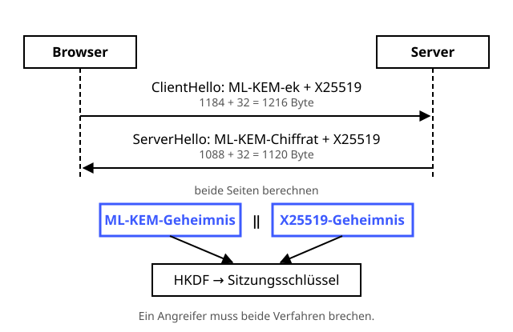

Hybrider Schlüsselaustausch
Doppelt gewürzt hält besser: klassisch und quantensicher in einem Topf.
Definition
Post-Quanten-Verfahren wie ML-KEM sind noch jung – vielleicht wird eines Tages eine Schwäche gefunden. Klassische Verfahren wie X25519 sind bewährt, aber nicht quantensicher. Ein hybrider Schlüsselaustausch macht beides gleichzeitig und kombiniert die Ergebnisse. Ein Angreifer muss dann beide Verfahren brechen. In TLS 1.3 heißt diese Kombination X25519MLKEM768 und ist in Browsern wie Chrome und Firefox bereits standardmäßig aktiv.
Zutaten
- X25519 (Diffie-Hellman mit elliptischen Kurven)
- ML-KEM-768
- Ein TLS-1.3-Handshake
- HKDF zur Schlüsselableitung
Zubereitung
- Der Browser erzeugt zwei Schlüsselpaare: eins für ML-KEM-768 und eins für X25519.
- ClientHello: Er schickt beide öffentlichen Teile hintereinander als einen Key Share: 1184 + 32 = 1216 Byte.
- Der Server kapselt mit dem ML-KEM-Schlüssel ein Geheimnis ein und erzeugt seinen eigenen X25519-Wert.
- ServerHello: Er schickt das ML-KEM-Chiffrat und seinen X25519-Wert zurück: 1088 + 32 = 1120 Byte.
- Beide haben jetzt zwei Geheimnisse – das aus ML-KEM und das aus X25519. Sie werden aneinandergehängt.
- Daraus leitet HKDF wie gewohnt die Sitzungsschlüssel ab. Der Rest von TLS läuft unverändert weiter.
Skizze

Es reicht, wenn eines der beiden Geheimnisse sicher ist – dann ist auch der Sitzungsschlüssel sicher.
Skizze erstellt von Claude (KI)
Demo
Platzhalter für die Demo
Tipps
- Die Authentisierung mit Zertifikaten und Signaturen bleibt vorerst klassisch. Gegen „Harvest now, decrypt later“ reicht der quantensichere Schlüsselaustausch.
- Das größere ClientHello passt nicht mehr in ein einzelnes Netzwerkpaket. Manche alten Firewalls und Middleboxes kamen damit nicht zurecht – ein Grund, warum die Einführung Zeit brauchte.
- Selbst nachsehen: In den Chrome-Entwicklertools steht im Sicherheitsbereich bei vielen Seiten X25519MLKEM768 als Schlüsselaustausch.
- Auch anderswo hybrid: OpenSSH nutzt seit Version 10.0 standardmäßig mlkem768x25519-sha256, Signal setzt auf PQXDH, Apples iMessage auf PQ3.
- Das BSI empfiehlt, Post-Quanten-Schlüsselaustausch wie ML-KEM nur in solchen hybriden Kombinationen einzusetzen.